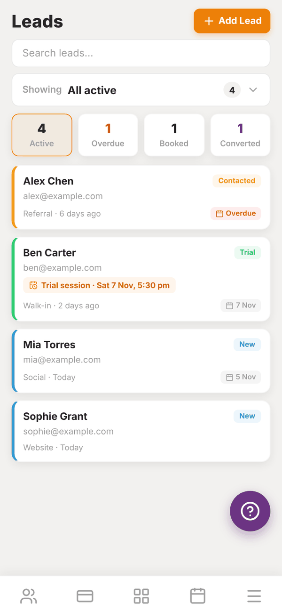
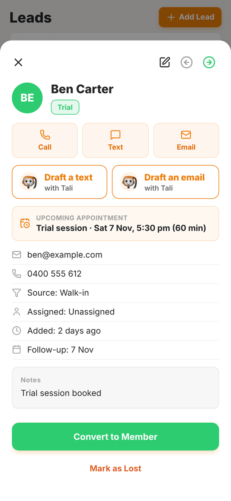
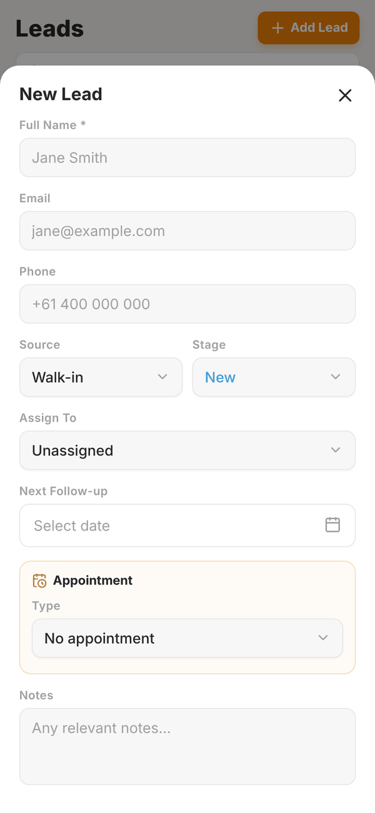

Totality for gym owners
Leads CRM
Track enquiries from first contact to member, book calls, tours and trials, follow up on time and convert leads into members in one tap.
Leads is a simple CRM for people interested in joining. Add each enquiry, move them through the stages, book a tour or trial, and convert them to a member when they sign up. The Leads CRM is part of every gym plan.
Open the Members tab, then Leads.


The stages#
| Stage | Meaning |
|---|---|
| New | Just came in |
| Contacted | You have been in touch |
| Trial | Booked or doing a trial |
| Converted | Now a member |
| Lost | Not joining, with a reason |
New, Contacted and Trial are the active stages.
The list#
- Search leads... finds a lead by name.
- Showing is a dropdown to pick which stage to show, with counts. It starts on All active.
- Four counts across the top: Active, Overdue (follow-up date has passed), Booked (an appointment coming up) and Converted.
- Each lead shows their stage, email, source, how long ago they came in, and their follow-up date, marked Overdue in red when it has passed. Overdue leads sit at the top.
Your dashboard also shows "Leads: 2 new, 2 follow ups due" so you do not forget them.
Add a lead#
- Tap + Add Lead.
- Enter their Full Name and, if you have them, Email and Phone.
- Pick the Source: Walk-in, Referral, Social Media, Website, Phone or Other.
- Pick the Stage.
- Assign To a trainer, or leave it Unassigned (it is then yours).
- Set the Next Follow-up date.
- Optional: book an Appointment: pick the Type (Call, Gym tour, Trial session or Consult), then the Date, Time and Length.
- Add Notes and save.

If a lead with the same email or phone already exists, you see Possible duplicate and can tap Add anyway.
Appointments show on the lead and in the calendar of whoever the lead is assigned to (you, if unassigned), through Calendar sync.
Work a lead#
Tap a lead to open it:
- Call, Text and Email open your phone's dialler, messages or email.
- Draft a text with Tali or Draft an email with Tali writes a friendly follow-up for you to edit (1 credit). Then tap Open in Messages or Open in Mail to send it from your phone, or copy it. See Tali AI for gyms.
- The arrows at the top move the lead back or forward a stage. The pencil edits them.
Convert a lead to a member#
When they join, tap Convert to Member and then Convert. This creates their Totality account and emails them an invite with their login, just like adding a member. The lead moves to Converted.
The lead needs an email address first. If it is missing you see "Email required".
Lost leads#
Tap Mark as Lost, add a Reason (optional) (for example "Budget constraints, signed elsewhere...") and tap Confirm Lost. If they come back, open them and tap Reopen Lead.
To remove a lead completely, tap Delete lead and confirm. This cannot be undone.
Questions#
Can leads come in from my website automatically?
Not at the moment. Add them by hand as they come in.
Can trainers see leads?
Leads you assign to a trainer show in their calendar sync when they have an appointment. Managing leads is done in the gym owner or admin login.
Does converting a lead start their membership?
No. It creates their account and adds them to your gym. Then start their membership once they have added a card.